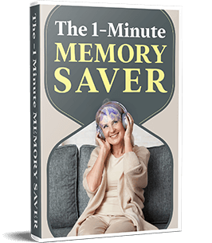
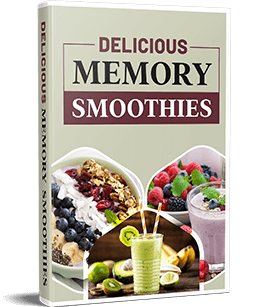
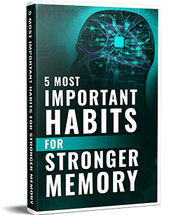
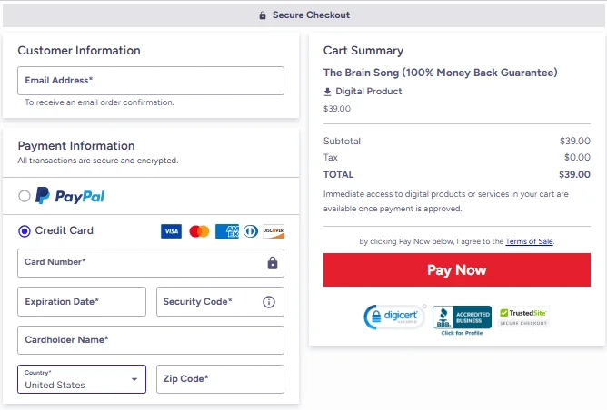

What Is “The Brain Song”?
The Brain Song is a digital audio file built around sound-wave entrainment and specific brainwave frequencies. Its makers describe it as a neuroscience-informed tool to support memory, clarity, concentration and overall cognitive performance.
It is not a medical treatment. It is a mindfulness-style listening aid meant to sit alongside a wider wellness routine. The main track runs 12–17 minutes, and you listen on headphones in a quiet space.
The audio uses carefully chosen frequencies, including the gamma-wave range, and rhythms intended to guide the brain toward a more focused state. The program also explains when and how to listen, and which headphones to use.
You can load it on a phone, computer or tablet and listen daily until it becomes a habit.
The Brain Song Customer Reviews
“As a busy mom and teacher, I was struggling with brain fog and forgetting little things. The Brain Song has truly revived my mind! I love how simple it is—no pills, no hours of exercise. I’m thinking clearer, learning faster, and even feel more optimistic. The bonuses, like the smoothie recipes, are a nice touch. I highly recommend it!”Sarah L. USA
“I’ve tried supplements and brain games before, but nothing compares to The Brain Song. Since using it, I’m recalling stories and facts with ease, and my golf buddies keep asking what my secret is! It’s relaxing to listen to, and I feel sharper every day. At $39, it’s a steal for what it’s done for my memory and focus.”Mike T. USA
“I started using The Brain Song about a month ago, and I’m genuinely impressed. I’ve always struggled with staying focused, especially while working from home. This program has helped me clear the mental noise and stay on task longer. I listen every morning before starting work, and I feel sharper and more in control. It's such a simple part of my day now, but the impact has been huge.”Sarah Mitchell – Austin, Texas
Experiences shared by users. Individual results vary, are not guaranteed, and are not a substitute for professional medical advice.
Want a closer look at what buyers say about the program? Read our full reviews guide.
The Brain Song: How Does It Work?
The Brain Song operates on the principles of neuroscience and sound to manipulate the behaviour of your brainwaves. The working principle of it is described simply below.
Brainwave Entrainment
Brainwaves are electrical waves which are inherently produced by the brain and are associated with various mental states, including relaxation, focus, or creativity. The Brain Song employs the songs that can have binaural beats or the isochronic tones. These tones stimulate your brain to synchronize to a particular frequency, such as a gamma-wave stimulated by high-level cognition. When you listen to it with headphones, you might hear a different note in each ear. The third internal tone is then formed in your brain to assist it to match with the desired frequency.
BDNF Activation and Gamma -Wave Focus.
The gamma -wave range (approximately 30 -100 Hz) is emphasized in the song. Studies indicate that the range is associated with attention, formation of memory, and synthesis of information. The program also refers to a protein BDNF that is significant in brain development and the formation of new connections. The song should not only promote the short-term enhancement of the brain but instead long-term wellbeing, which is achieved through the establishment of brain activity conducive to the production of BDNF.
Structured Daily Use & Minimal Effort
The schedule is not complicated: a daily lesson that lasts 12-17 minutes. You fit it into a busy day. Constant listening causes your brain to gradually get used to and train the beneficial brainwave condition and neural connections. The makers say that no major training, fancy equipment, or dietary changes are needed, you simply have to continue listening in a quiet environment.
Stress Reduction Through Sound
Along with brainwave entrainment, The Brain Song also includes calming soundscapes designed to ease mental tension. The makers note that a relaxed mind is better able to focus and retain information, so reducing background stress is considered an important part of how the program works. This gentle, layered approach is meant to support both mental clarity and a sense of calm during and after each session.
Consistency and Long-Term Use
Like most sound-based wellness tools, The Brain Song is designed for daily use rather than a one-time listen. The makers explain that repeated listening, over days and weeks, allows the brain to become more familiar with the desired frequency states, which may support longer-lasting benefits compared to occasional use.
Practical Steps for Use
- Find some peaceful spot where there will be no distraction.
- Wear good stereo headphones in order to hear the right tones in both ears.
- Sit or lie in a comfortable position, close or relax your eyes or the gaze and press play.
- Let the session continue 17 minutes straight; it is just listening.
- And then keep on with your day.
- Possible effects, as reported by users, include clearer thinking, better concentration and quicker recall.
We explain the research behind The Brain Song in does it really work?
Why Are People Using The Brain Song?
The current generation experiences a lot of distraction, lack of thinking ability, forgetfulness or fatigue. The Brain Song is an attractive product since it is a non-medication, natural method of making thought clearer. Individuals who have experienced it note feeling more awake, not so hazy in their heads and capable of remaining on tasks. People say that they can continue doing it because it is fast and simple.
It also brings hope to those who have used numerous ways of trying, but they still believe that their mind is not sharp. This is why the program receives increased attention.
How to Fit The Brain Song Into Your Daily Life
Many users find that The Brain Song works best when it becomes a small, consistent part of the daily routine rather than something used only occasionally. Below are some of the common ways people incorporate it into their day.
Morning Routine
Listening to The Brain Song shortly after waking up is one of the most common approaches. The makers note that starting the day with a calm, focused mind can help set a more productive tone for the hours ahead, before notifications, emails, and daily distractions take over.
During Study or Work Sessions
Some users prefer to listen to The Brain Song right before a study session, an important work task, or a creative project. This is meant to help quiet mental noise and ease into a more focused state before diving into demanding tasks.
Midday Reset
For those who experience an afternoon slump or mental fatigue, a short listening session in the middle of the day is sometimes used as a way to pause, recharge, and return to tasks with a clearer head.
Before Sleep
A number of users choose to listen to The Brain Song in the evening, as part of winding down before bed. The calming soundscapes included in the program are designed to ease mental tension, which some find helpful for settling into a more relaxed state before sleep.
Building a Habit
Regardless of the time of day chosen, the makers emphasize that consistency matters more than timing. Listening at the same time each day can make it easier to stick with the routine and may support more noticeable results over time.
For a step-by-step four-week plan, see how to use it, or read how the audio fits studying and memory.
Pros and Cons of The Brain Song
Pros
- Simple daily routine — only 12-17 minutes a day, no complicated steps
- Completely drug-free and non-invasive, generally considered low-risk for most people
- Based on neuroscience concepts like brainwave entrainment and BDNF activation
- Easy to use on any device — phone, tablet, or computer
- Backed by a 90-day money-back guarantee for a risk-free trial
- Comes with bonus resources like the memory smoothie guide and habit infographic
Cons
- Results are not instant — consistent daily listening over time is needed to notice benefits
- Requires headphones and a quiet space for the best experience
- Sold only as a digital download through the vendor’s checkout (no offline or physical version)
What Makes The Brain Song Unique?
The Brain Song is special because it uses sound, not medicine, to help the mind work better. It combines science, brain music, and brainwave technology in one simple audio track. You don’t need long exercises or complex tools—just a few quiet minutes with your headphones. Its goal is to make your brain calm, focused, and clear naturally. What makes it truly unique is how easy it is to use every day, even for busy people. It gives your mind gentle training through sound, helping you think sharper and feel more balanced.
With regular listening, you may start noticing better focus, stronger memory, and a more peaceful state of mind. Many users say they feel more creative and productive after just one session. The carefully designed audio frequencies work in harmony with your brain’s natural rhythm, helping it perform at its best. Unlike supplements or stimulants, there is nothing to swallow and no caffeine crash—just pure, soothing sound waves that recharge your mind.
It’s like a mental workout that relaxes you instead of tiring you out. Whether you’re studying, working, meditating, or trying to unwind after a long day, The Brain Song adapts perfectly to your mood. It helps you clear away mental fog and stay centered, even when life feels stressful. Over time, it can help build lasting focus, motivation, and inner peace.
Simply press play, close your eyes, and let the music guide your thoughts into calm clarity. The Brain Song isn’t just audio—it’s an experience that nurtures your mental strength and emotional balance every single day.
Who Created The Brain Song?
The background below comes from the vendor’s own materials and has not been independently verified by this site.
The Brain Song was developed by Dr. James Rivers, a respected neuroscientist and expert in sound therapy with decades of experience studying the effects of sound frequencies on the human brain. Throughout his career, Dr. Rivers explored how specific vibrations can influence focus, memory, mood, and overall mental performance.
His groundbreaking research uncovered that certain sound patterns can naturally harmonize brainwave activity—helping to enhance mental clarity, reduce stress, and awaken creativity. This powerful discovery became the foundation for The Brain Song, an innovative audio program designed to gently stimulate the brain, encourage deep relaxation, and support lasting cognitive health.
Driven by a desire to create a simple, drug-free solution for those struggling with brain fog, anxiety, or poor concentration, Dr. Rivers combined the latest findings in neuroscience with ancient sound-healing traditions. The result is a 17-minute daily listening experience that helps re-tune your mind for focus, calm, and creativity.
Although some members of the development team prefer to remain private, The Brain Song remains rooted in science and guided by a clear mission—to help people of all ages improve their brain function naturally through the power of sound.
Dr. Rivers' interest in sound and the brain began with a simple observation: people consistently described feeling calmer, sharper, and more focused after listening to certain rhythmic and harmonic sound patterns—long before science fully explained why. This curiosity led him to dedicate his career to studying how specific frequencies interact with natural brainwave states, rather than chasing trends in the wellness industry.
What sets his approach apart is restraint. Instead of building a program around complicated rituals, expensive equipment, or bold promises, Dr. Rivers focused on one question: what is the simplest, safest way to help the brain settle into a more focused, clear state—using nothing but sound? The Brain Song is the answer to that question, refined through repeated testing and real listener feedback rather than marketing claims alone.
Today, The Brain Song continues to be guided by that same principle—that meaningful brain support doesn't require pills, hours of effort, or complex technology. Just consistency, the right sound design, and a few quiet minutes each day.
Who Should Use The Brain Song & When?
The students, professionals, mentally exhausted learners, or anyone who prefers to keep their mind sharp without relying on pills will truly appreciate this audio program. The Brain Song is designed for those moments when your mind feels foggy, your focus drifts, or your work takes longer than usual. It can help refresh your brain, boost your attention span, and make you feel mentally energized again.
Whether you’re studying for exams, managing a busy schedule, or trying to stay focused during long hours at work, The Brain Song provides the gentle mental reset your brain needs. It helps you get into a clear and productive state of mind faster, allowing you to perform tasks with greater ease and confidence. Many users notice they can remember details better, process information faster, and stay calm even under pressure.
The best time to use it is in the morning, before diving into your daily workload, or anytime you need to re-energize your focus. Just put on your headphones, close your eyes, and let the sound frequencies guide your mind into balance. Within minutes, you may begin to feel more alert, peaceful, and mentally organized.
For students, it can be a powerful study companion that keeps you motivated and attentive during long reading sessions. For professionals, it helps clear distractions and maintain steady concentration on important tasks. Even those going through mental fatigue or burnout may find it an excellent way to recharge and regain clarity without caffeine or medication.
Because it’s completely non-invasive and drug-free, it is generally considered low-risk for regular daily use. However, if you have serious neurological conditions, such as epilepsy or other brain disorders, it’s always best to consult your healthcare professional before using any audio-based brain stimulation program.
Ultimately, The Brain Song acts like a mental tune-up—helping your brain stay sharp, calm, and in control throughout the day. It’s a small habit that can create big changes in your productivity, focus, and emotional balance over time.
Try The Brain Song With a 90-Day Money-Back Guarantee
$39
One-time payment for The Brain Song. Instant digital access. Vendor refund terms apply.
Get The Brain SongTop Benefits of The Brain Song
Users report feeling noticeable benefits from The Brain Song when they listen to it regularly. Many say they experience improved focus during work or study sessions, reduced morning brain fog, and sharper recall of names, dates, and important details. They also mention a greater sense of mental clarity and calm throughout the day.
Each session lasts roughly 12 to 17 minutes, making it easy to fit into any morning routine—even for people with busy schedules. Because it’s completely digital and non-medicated, it appeals to a wide range of users who prefer natural ways to support brain health. Think of it as a short, daily mental exercise that strengthens your brain over time rather than a “quick-fix” or “magic pill.”
By dedicating just a few minutes each day, you’re essentially training your brain to function at a higher level. Over time, these small daily sessions can help enhance focus, productivity, creativity, and even mood stability. The soothing sound frequencies work in the background, gently guiding your brain into a balanced, alert state.
Users also find it helpful for preparing before important meetings, study sessions, or creative work. Some say it helps them overcome procrastination, while others notice they can stay “in the zone” for longer periods without getting distracted. It’s a simple yet powerful routine that helps you feel mentally refreshed, confident, and in control of your thoughts.
Unlike traditional stimulants or supplements, there’s no crash or dependency. You simply enjoy the uplifting effects of pure sound waves that align with your brain’s natural rhythm. Whether you’re a student, a professional, or simply someone looking to think more clearly, The Brain Song can become your favorite daily ritual for mental strength and focus.
Curious how the program compares with other options? See how it compares with alternatives.
Money-Back Guarantee of The Brain Song
100% Satisfaction — 90-Day Money-Back Guarantee
The Brain Song is backed by a risk-free 90-day money-back guarantee, giving you complete confidence to try the program without any worries. Experience the results for yourself—if you don’t feel the improvement in focus, clarity, or mental energy you expected, simply request a full refund within 90 days, as stated by the vendor.
No questions asked, no hassle—just your money back. This guarantee reflects the creators’ strong belief in the effectiveness of The Brain Song and their commitment to customer satisfaction. It ensures your investment is completely safe, giving you total peace of mind while you explore the power of sound to boost your brain performance naturally.
The exact steps to claim your money back are in our price and refund guide.
Is The Brain Song Legit or a Scam?
Many people search for “is The Brain Song a scam” or “is The Brain Song legit” before trying a new wellness program, and it is a fair question. The Brain Song is a real digital audio product sold through the ClickBank marketplace, and payment is handled on ClickBank’s checkout page. It does not promise instant results; it is presented as a simple, drug-free listening routine to use daily over time.
Two things are worth knowing before you buy. First, the vendor offers a 90-day money-back guarantee, which lowers the financial risk, so check the exact terms on the checkout page. Second, the claims about brainwave entrainment and BDNF come from the vendor and from general research on sound and the brain. They are not clinical proof that this specific audio improves memory, and results vary from person to person.
If you decide to try The Brain Song, treat it as a low-cost experiment: listen daily for a few weeks, note how you feel, and use the refund if it does not help.
Our longer legitimacy check covers the seller and checkout, and the free download guide explains why free copies of The Brain Song are unsafe.
The Brain Song Bonuses – What You Get

1-Minute Memory Saver.
A quick, science-backed method to lock new information into your long-term memory. Simple to use anytime—at home, work, or on the go—it helps you instantly retain important facts, names, and lessons with ease.

15 Delicious Memory Smoothies:
A guide featuring 15 tasty smoothie recipes crafted with brain-boosting ingredients like blueberries and omega-3-rich foods, using simple grocery items to support cognitive health.

5 Most Important Habits for Stronger Memory Infographic:
A 2024 research-based printable infographic featuring five proven habits to boost and maintain memory as you age — thoughtfully designed for easy reference and daily motivation.
The Brain Song Frequently Asked Questions
How to Use The Brain Song
Using The Brain Song is simple. Just put on your headphones, relax, and listen to the 17-minute audio track each day in a calm, quiet space. You don’t need to write, chant, or perform any extra steps—simply allow the sound frequencies to do their work, gently stimulating your brain and activating BDNF for better focus and mental clarity.
How quickly will I see results the brain song?
Some users report noticing clearer thinking, improved focus, and better recall within the first two weeks of consistent listening. However, bigger improvements are usually reported after 30–90 days of daily use, as the brain gradually adapts to regular listening (individual results vary).
Is The Brain Song safe to use?
Yes. The Brain Song is completely non-invasive and works solely through carefully engineered sound frequencies. It’s generally regarded as low-risk for most people, and no side effects are widely reported. Still, if you have specific medical conditions or neurological concerns, it’s best to consult your healthcare provider before starting.
Can The Brain Song help with my career?
It may help. By supporting focus, memory, and learning speed, The Brain Song could contribute to job performance, problem-solving, and mental clarity, though results vary. Many users report feeling more productive, confident, and creative—qualities that can directly support career growth and professional success.
Should I combine it with other brain exercises?
While The Brain Song is effective on its own, combining it with other cognitive activities—such as reading, learning a new skill, or doing light physical exercise—can amplify your mental performance and accelerate progress toward your personal or professional goals.
Do I need special equipment to use The Brain Song?
No special equipment is needed to use The Brain Song. You just need a digital device like a phone, tablet, or computer and a pair of good-quality headphones. Once you download the program, you can listen anywhere, making it easy to fit into your daily routine.
Does The Brain Song really work?
The Brain Song works through consistent daily listening, not as an instant fix. Many users report noticing improved focus and mental clarity within the first two weeks, with deeper benefits building over 30-90 days of regular use, as explained in the program's neuroscience-based approach.
What is The Brain Song?
The Brain Song is a digital audio program designed to support focus, memory, and mental clarity using sound-based techniques like brainwave entrainment. It requires just 12-17 minutes of daily listening through headphones, with no drugs or special equipment needed.
Can I get The Brain Song for free or as a download?
The Brain Song is sold as a paid digital download through the vendor’s checkout page. Free copies offered elsewhere are not official. Choosing the official source ensures you receive the complete, correctly engineered audio program along with all included bonuses.
Is The Brain Song worth the price?
At $39, The Brain Song is a one-time purchase with lifetime access—no subscriptions or hidden fees. It also includes free bonuses like the Memory Smoothie guide and the Memory Habits infographic, adding extra value beyond the audio program itself.
What if I'm not satisfied with The Brain Song?
The vendor states that every purchase is covered by a 90-day money-back guarantee. If The Brain Song doesn't work for you, you can request a full refund directly—no risk involved.
Where should I buy The Brain Song from?
The Brain Song is best purchased through the official vendor checkout linked on this page to ensure you receive the complete, correctly engineered audio program along with all included bonuses and the money-back guarantee.
More Guides and Resources
The Brain Song is easier to judge when you can see the full picture. These guides cover the research, the seller of The Brain Song, the price and the alternatives, so you can decide with your eyes open.
What Happens After You Click “Buy Now”?
Once you click the “Buy Now” button below, you’ll be taken to a secure checkout page. Simply enter your details, and you’ll receive instant access to the complete The Brain Song program so you can start experiencing its powerful benefits right away.

How Safe Is My Credit Card Information?
Payments for The Brain Song are processed on ClickBank’s secure checkout page, a payment platform with long experience handling online purchases. Your card details are entered on that page, not on this website.
Refund Policy
According to the team of experts behind The Brain Song, the creators offer an outstanding refund policy to ensure every user feels confident trying the program. When you purchase any of the available packages, you’re automatically covered by a 90-day, 100% money-back guarantee. If for any reason The Brain Song doesn’t meet your expectations or you’re not satisfied with your results, you can request a full refund—no questions asked. This policy reflects the creators’ strong belief in the program’s effectiveness and their commitment to your satisfaction.
Contact
Questions about this website: support@us-eng-thebrainsong.com. Refunds and order issues are handled by the vendor through ClickBank.
Ready to Try The Brain Song?
$39
Your purchase of The Brain Song comes with a 90-day money-back guarantee (vendor terms apply).
Get The Brain Song